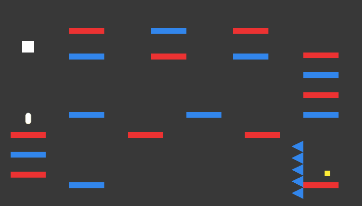

Iroha
By Beining Zhou.
Link to the game: https://kawasemii.github.io/eecs494-zelda-remaster/
This is a platform game in which you can control what color you see in the game stage. If you press space key, you'll find that the stage changes -- only the objects that have the same color as you become visible and interactive. The goal is to reach the white cube without getting hurt. In short, it's all about jumping and switching colors. Enjoy!
Controls: arrow keys for movement and jumping, space key for switching color.
Technology used:
C# and Unity.